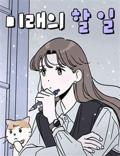
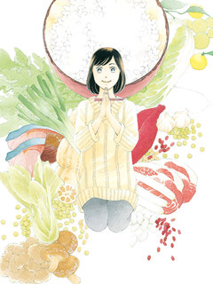

백수세끼 같은 웹툰 추천

백수세끼 · 치즈
백수세끼 재밌게 봤다면 이 웹툰들도 좋아할 거예요. 같은 장르이면서 평범남, 평범녀, 감성드라마 같은 요소가 겹치는 작품을, 겹치는 요소가 많은 순서로 20개 골랐어요.
2026-09-30 기준 · 네이버웹툰·카카오웹툰·레진코믹스 · 성인 작품 제외
내 취향으로 직접 골라 추천받기 →-
1
 네이버웹툰
네이버웹툰사리네 보석함
사리가 만나는 사람들은 하나같이 어딘가 좀 이상하다. 늘 완벽하고 멋진 누군가를 동경하며 그렇지 못한 자신을 질책하는 평범한 21살의 여대생 송사리. 사리는 1년 동안 다양한 사람을 만나지만 그들은 하나같이 어딘가 좀 이상하다. 과연, 이들은 사리의…
평범녀감성드라마캠퍼스리얼로맨스로맨스드라마네이버웹툰에서 보기 → -
2
 네이버웹툰
네이버웹툰착한 여자 안선해
사람들이 생각하는 ‘착하다’는 무슨 뜻일까? 선해는 착하다는 말을 싫어한다. 어린 시절부터 사람들이 이유 없이 선해가 착하다고 말해왔기 때문이다. 착한 일을 한 적도 없는데 왜 그렇게 말하는 건지. 사람들의 세뇌 덕분에 선해는 직업도 사회복지사로 정…
평범녀감성드라마오피스공감드라마네이버웹툰에서 보기 → -
3
 네이버웹툰
네이버웹툰누가 어른 되면 다 된댔어?
인턴부터 쭉 충성했더니 연봉 동결, 보람 없는 업무, 반복되는 야근! 결국 사표를 낸 재이는 오래 꿈꿔왔던 화가의 길로 들어서는데… 좋아서 시작한 일이지만 이 길은 멀고도 험하다. 의욕만 충만한 프리랜서, 인생의 노잼시기를 겪는 직장인 등… 나이만…
평범남리얼로맨스오피스로맨스드라마네이버웹툰에서 보기 → -
4
 네이버웹툰
네이버웹툰마흔 즈음에
어느 덧 마흔살이 된 현성민은 주변을 돌아보니 혼자가 되었다는 현실을 절실히 깨닫게 된다. 자신의 인생 뿐 아니라 직장에서도 위기를 맞게 된 현성민은 진정한 행복을 찾기 위해 고군분투 하기로 결심한다. 불혹의 나이, 아직 늦지 않았다!
평범남리얼로맨스공감로맨스드라마네이버웹툰에서 보기 → -
5네이버웹툰
와인파티에서 순애찾기
33살 공무원 유진은 “모태솔로인 줄 알았어요”라는 말을 듣게 된다. 충격을 받은 유진은 알고리즘에 이끌려 와인파티에 나가게 되는데... 과연 유진은 순애를 찾을 수 있을까?
평범녀리얼로맨스공감로맨스드라마네이버웹툰에서 보기 → -
6
 네이버웹툰
네이버웹툰호붕빵 아저씨
귀여운 디저트를 판매하고 싶은 꿈을 가진 호랑이, 맹호석. 한때는 무서운 조직의 일원이었지만, 손을 씻고 시작한 건… 다름 아닌 붕어빵 장사! 하지만 새 삶도 결코 순탄하지 않은데… 선입견과 편견이 가득한 시선 속에서, 호석은 과연 동네 주민들과 잘…
감성드라마음식&요리공감로맨스드라마네이버웹툰에서 보기 → -
7

네이버웹툰미래의 할 일
새벽 4시 기상, 분 단위 계획표로 갓생을 사는 미래. 1분 1초도 허투루 보내지 않던 그녀의 일상에 계획에 없던 남자, 찬영이 끼어든다. 오직 지금에만 충실한 찬영으로 인해 미래의 계획은 자꾸만 흐트러지게 되는데... 미래는 과연 자신의 루틴과 투…
평범녀감성드라마리얼로맨스로맨스드라마네이버웹툰에서 보기 → -
8
 네이버웹툰
네이버웹툰살아생전
사람이 죽으면 저승사자가 찾아와 이름을 세번 부른다. 마중 나온 저승사자 와 망자가 삼도냇가에 이르면 의령수라는 아주 큰 나무가 있는데, 그 밑에 작은 식당 '살아생전'이 있다. 망자가 생전에 가장 먹고 싶었던 음식과 그곳 으로 안내하는 저승사자 '…
감성드라마음식&요리공감드라마네이버웹툰에서 보기 → -
9
 네이버웹툰
네이버웹툰소녀의 세계
완벽해 보이지만 사실 외로웠던 백조들과 맘씨 착한 오리가 만나 여러 갈등을 함께 겪으며 진짜 친구가 되어가는 소녀들의 찐 우정물
감성드라마공감로맨스드라마네이버웹툰에서 보기 → · 소녀의 세계 같은 웹툰 → -
10
 네이버웹툰
네이버웹툰아직 제목 없음
친구 없음, 의욕 없음, 특기 없음. 상처 있음, 불만 있음, 결핍 있음. 학교 대표 아싸 천희와 준휘가 의기투합하여 동아리를 만든다. 하지만 이 동아리. "인싸는 출입금지입니다."
감성드라마공감로맨스드라마네이버웹툰에서 보기 → -
11
 네이버웹툰
네이버웹툰사자의 코털을 건드린 것 같아요
2년 간 좋아했던 첫사랑이 내 절친과 결혼한다? 내 마음을 숨기려 사장님을 좋아한다고 거짓 고백까지 했는데… 사장님이 들어버렸어?! 감동받은 사장님은 약혼자와 파혼하고 나와 결혼할 결심까지??! 오해와 착각 속에서 폭주하는 이 직진남의 돌격을 피할…
평범녀리얼로맨스오피스로맨스네이버웹툰에서 보기 → -
12
 네이버웹툰
네이버웹툰완벽한 게 다인
매사에 열심히, 열정적인 학창시절을 살아온 대학 새내기 김다인은 성적, 교우관계, 스펙 모든 것이 완벽한 캠퍼스 라이프를 꿈꾼다. 하지만 다인은 자신과 이름이 같지만 자신과 다르게 '완벽한 외모와 인성을 겸비한' 강다인과 함께 입학하며 인생 첫 굴욕…
캠퍼스공감로맨스드라마네이버웹툰에서 보기 → -
13
 네이버웹툰
네이버웹툰폐급연애
서울 고시원에 사는 이재훈은 결핍과 열등감 속에서 무감각하게 살고 있다. 뜨거운 여름 날, 그는 익명 채팅방에 연애썰을 풀기 시작하고 뜻밖의 관심과 환호 속에서 처음으로 살아있는 기분을 느낀다. 3호실 여자와의 썸, 오픈채팅방 ‘코코로즈’와의 관계를…
리얼로맨스공감로맨스드라마네이버웹툰에서 보기 → -
14네이버웹툰
최서연의 회피한 날들
연애만 했다 하면 사소한 이유로 이별해버리는 회피형 인간, 최서연. 지금껏 그냥 짝을 잘 못 만난 줄 알았는데… 연애를 거듭할수록, 진짜 문제는 ‘나’였단 걸 점점 알게 된다. 과연 회피형을 극복하고 건강한 연애를 할 수 있을까?
리얼로맨스공감로맨스드라마네이버웹툰에서 보기 → -
15
 네이버웹툰
네이버웹툰같이 장볼래?
유통기한 임박 상품만 노리는 생활력 만렙 자취러 ‘양은’과, 모든 삶을 효율로 계산하는 미니멀리스트 ‘우석’. 1+1 딸기를 나눠산 그 날부터, 두 사람의 썸… 아니, 장보기가 시작된다!
리얼로맨스음식&요리공감로맨스네이버웹툰에서 보기 → -
16
 네이버웹툰
네이버웹툰죽어 천국에 가다
고철수는 삶에 미련이 없다. 저승의 삶도 환생도 싫었다. 고철수는 완전한 죽음을 꿈꾼다. 자신의 존재가 완전히 사라지길 원했다. 하지만 그런 철수를 세상은 놓아주지 않는다.
감성드라마재회드라마네이버웹툰에서 보기 → -
17
 네이버웹툰
네이버웹툰나랑 같이살아
사랑하는 가족과 이별한 순간, 고양이 하루는 입양되기 전 어린 시절로 돌아온다. 자신을 아직 모르는 엄마 소원을 다시 만나기 위해 기억 속 집을 향해 길을 나서지만, 사람의 말도 길도 알 수 없는 작은 고양이에게 세상은 너무 넓고 험하다. 하루는 다…
감성드라마공감드라마네이버웹툰에서 보기 → -
18
 레진코믹스
레진코믹스백미 예찬
구운 김, 우메보시, 연어알에 온천 달걀… 갓 지은 밥과 함께라면 이 순간이 행복의 맛! 어릴적부터 흰 쌀밥을 매우 좋아했던 OL 메구미는 일이 끝나면 술자리보다 흰 쌀밥과 어울리는 반찬의 맛 탐구! 밥맛 코믹!
음식&요리오피스드라마레진코믹스에서 보기 → -
19

레진코믹스백미 예찬 [단행본]
구운 김, 우메보시, 연어알에 온천 달걀… 갓 지은 밥과 함께라면 이 순간이 행복의 맛! 어릴적부터 흰 쌀밥을 매우 좋아했던 OL 메구미는 일이 끝나면 술자리보다 흰 쌀밥과 어울리는 반찬의 맛 탐구! 밥맛 코믹!
음식&요리오피스드라마레진코믹스에서 보기 → -
20
 네이버웹툰
네이버웹툰경성배달꾼
배달 문화는 일제강점기 때도 있었다. 그런데… ‘이걸’ 배달하라고요? 1931년 경성, 인기 냉면집의 베테랑 배달부 태성. 어느 날 그릇에 숨겨진 밀서를 발견하며 평온했던 일상이 뒤틀린다. 위험한 의뢰, 경찰의 추적, 그 속에서 꿈틀거리는 감정들.…
평범남로맨스드라마네이버웹툰에서 보기 →